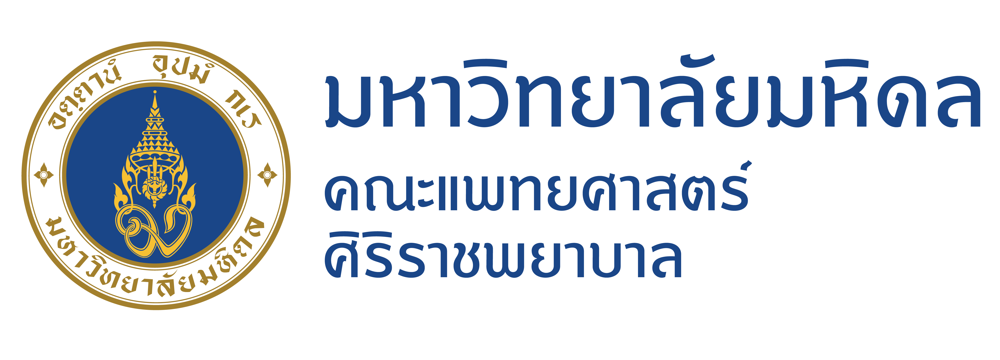
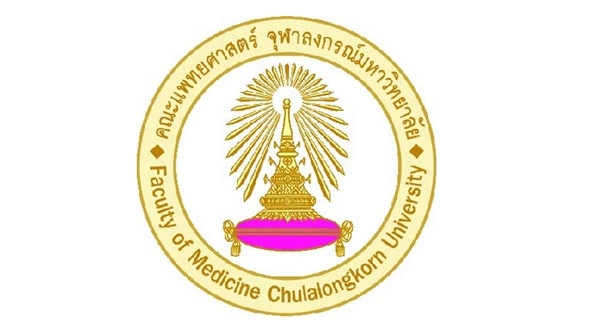
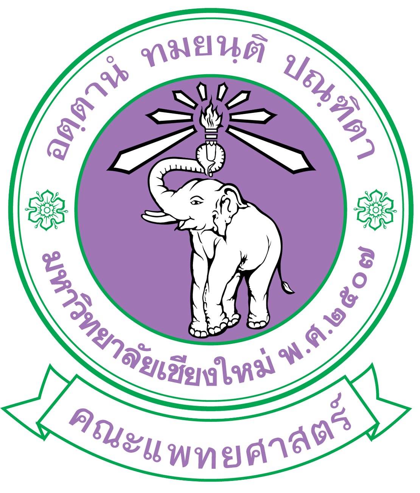

จุดเริ่มต้นของความสนใจ
ในฐานะนักเรียนชั้นมัธยมศึกษาปีที่ 6 ข้าพเจ้ากำลังอยู่ในช่วงเวลาสำคัญของชีวิตที่ต้องตัดสินใจ เลือกเส้นทางการศึกษาต่อและอาชีพในอนาคต หนึ่งในเส้นทางที่ข้าพเจ้าสนใจและตั้งใจที่จะศึกษาอย่างจริงจังคือ สายการแพทย์ เนื่องจากข้าพเจ้ามีความสนใจในวิทยาศาสตร์ โดยเฉพาะเรื่องร่างกายมนุษย์ การทำงานของอวัยวะต่าง ๆ รวมถึงกระบวนการที่เกี่ยวข้องกับการดูแลและรักษาสุขภาพ
เหตุผลที่สนใจสายการแพทย์
สิ่งที่ทำให้ข้าพเจ้าสนใจสายการแพทย์มากขึ้น คือการได้เรียนรู้ว่าความรู้ทางวิทยาศาสตร์สามารถนำมาใช้ เพื่อช่วยเหลือและดูแลชีวิตของผู้อื่นได้ การแพทย์จึงไม่ใช่เพียงการรักษาเมื่อเกิดความเจ็บป่วย แต่ยังเกี่ยวข้องกับการป้องกันโรค การส่งเสริมสุขภาพ และการทำให้ผู้คนสามารถมีคุณภาพชีวิตที่ดีขึ้น ข้าพเจ้ารู้สึกว่างานที่ได้ใช้ทั้งความรู้ ความสามารถ และความรับผิดชอบเพื่อช่วยเหลือผู้อื่น เป็นงานที่มีคุณค่าและมีความหมาย
การพัฒนาตนเอง
ข้าพเจ้าตระหนักดีว่าการศึกษาต่อในสายการแพทย์ จำเป็นต้องอาศัยความรู้ทางวิทยาศาสตร์ ความละเอียดรอบคอบ ความอดทน และความรับผิดชอบสูง ข้าพเจ้าจึงพยายามพัฒนาตนเองทั้งด้านการเรียน การคิดวิเคราะห์ การแก้ปัญหา และการทำงานร่วมกับผู้อื่น พร้อมทั้งฝึกฝนตนเองให้เป็นคนที่มีวินัย และไม่ย่อท้อต่อความยากลำบาก
เป้าหมายในอนาคต
ข้าพเจ้าหวังว่าจะได้รับโอกาสศึกษาต่อในสาขาที่เกี่ยวข้อง กับสายการแพทย์ เพื่อพัฒนาความรู้และทักษะของตนเอง อย่างเต็มความสามารถ และนำสิ่งที่ได้เรียนรู้ไปใช้ ในการดูแลสุขภาพและช่วยเหลือผู้อื่นในอนาคต ข้าพเจ้าเชื่อว่าการทำงานในสายการแพทย์ ไม่เพียงต้องมีความรู้ทางวิชาการ แต่ยังต้องมีความเข้าใจและใส่ใจต่อผู้คน ซึ่งเป็นคุณค่าที่ข้าพเจ้าตั้งใจจะยึดถือ ในการเดินบนเส้นทางนี้

คณะแพทยศาสตร์ศิริราชพยาบาล
มหาวิทยาลัยมหิดล

คณะแพทยศาสตร์
จุฬาลงกรณ์มหาวิทยาลัย

คณะแพทยศาสตร์
มหาวิทยาลัยเชียงใหม่